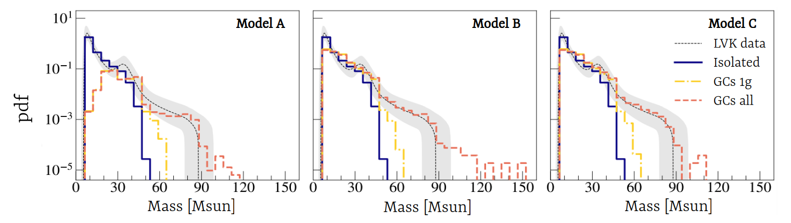

Hierarchical binary black holes evolution in Globular Clusters
The Challenge: Massive Black Holes in the Gravitational-Wave Sky
One of the key open questions in gravitational-wave astronomy is the origin of black holes heavier than ~50 solar masses. The so-called pair-instability mass gap is expected to prevent black holes from forming via single-star evolution in this range. Yet, LIGO/Virgo have detected many mergers involving such massive black holes.
This project explores one promising pathway: hierarchical mergers in globular clusters (GCs). In these dense stellar environments, black holes can form binaries, merge, and the remnants can remain bound, leading to second- and third-generation mergers. This study aims to model this process and compare its imprint on observable parameters—mass, spin, and merger rate—with those of isolated binaries.
Modeling Strategy and Cluster Evolution Scenarios
We use a fast, semi-analytic model (fastcluster) to simulate the dynamics and evolution of black holes in GCs. The model accounts for:
- Stellar evolution and black hole formation
- Binary formation via three-body interactions
- Binary hardening and gravitational-wave decay
- Relativistic recoil and black hole ejection
- Cluster expansion and mass loss (internal and tidal)
Three cluster evolution scenarios are considered:
- NoEv: The cluster does not evolve over time.
- Evol: The cluster evolves in isolation, expanding due to internal dynamics.
- Tidal: The cluster is also affected by the tidal field of the host galaxy.
Three Models of Black Hole Pairing
A key uncertainty in modeling black hole binaries is how black holes pair up. This project explores three models, each making different assumptions about how black holes form binaries, particularly at later generations.
Model A
- First-generation (1g) BHs pair preferentially by mass via three-body dynamics.
- Only first-generation black holes are allowed as merger companions at later generations.
Model B
- 1g BHs are drawn from the population using a broader pairing prescription.
- Secondary BHs at later generations can themselves be products of previous mergers.
Model C
- Same pairing for 1g BHs as in Model B.
- But, at later generations, the secondary must be a 1g BH.
These assumptions affect both the mass distribution and the number of hierarchical generations achievable before black holes are ejected from the cluster.
Mass Distributions of Merging Black Holes

Figure above shows the primary black hole mass distribution for each model (A, B, C), compared to mergers from isolated binaries (blue) and LIGO/Virgo observations (grey shaded). Key insights:
- Isolated binaries dominate at ~10 M☉, but cannot account for heavier black holes.
- GC mergers (especially Models B and C) reproduce the high-mass tail (m₁ > 50 M☉) through hierarchical assembly.
- Model A lacks low-mass mergers due to its strict pairing rule favoring massive BHs.
- The shape and slope of the high-mass end strongly depend on how black holes are allowed to combine across generations.
The models also reveal how mass ratio distributions and spin misalignments differ between GC and isolated scenarios, helping distinguish their contributions in gravitational-wave data.
Summary of Key Findings
- Cluster dynamics limit hierarchical growth to 2–3 generations, with mergers beyond 3g rare due to expansion and ejection.
- Models B and C produce a dual-peak mass distribution, with one peak around 10 M☉ and another around 35–40 M☉.
- Hierarchical mergers dominate the high-mass tail (m₁ > 50 M☉) and explain the presence of BHs in the pair-instability gap.
- The mass distribution evolves with redshift, with heavier mergers more common at higher redshift (z ≳ 2), reflecting metallicity evolution.
- A Bayesian mixture analysis shows that globular clusters may account for >60% of observed BBH mergers, particularly when spin misalignment is included.
- Spin distributions from hierarchical mergers also predict a secondary peak in precession (χₚ), which future detectors may be able to test.
Why It Matters
This work demonstrates that globular clusters are efficient factories of massive black hole mergers, especially when their internal evolution and hierarchical assembly are taken into account. It also provides concrete predictions for spin, mass, and redshift evolution that can be tested with current and future gravitational-wave observatories (e.g., LIGO, Virgo, KAGRA, Einstein Telescope).
Understanding the role of globular clusters is key to decoding the full population of binary black holes—and ultimately the stellar and dynamical environments that create them.